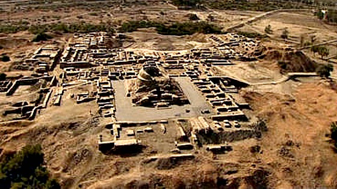

Early Harappan
The Early Harappan period is defined, more or less, by the fact that it was the precursor to the massive cities of the Mature Harappan period. One city of this time is Kot Diji, representing a tendency to gravitate towards centralized power and a higher quality of urban life. Very suddenly, a united civilization emerged.Trade networks were developed, and animals were domesticated.

Mature Harappan
The Mature Harappan period is the bulk of the Indus Valley Civilization's existence. During this time, the largest cities, Harrapa and Mohenjo Daro developed. Many large cities, including Dholavira, Lothal and Rakhigarhi developed subsequently. They were largely concentrated on the drainage basin of the Indus river. These cities had the best urban planning of any civilization at the time, including well-arranged neighbourhoods and fully functional sewage systems. Each house's bathroom had a sloping floor to diver water into covered drains along the streets. The architecture was the most well developed of the ancient world, with massive granaries, citadels, warehouses and walls (to divert flood waters.)The uniformity of the IVC was surprisingly coherent, as there is no evidence pointing to any form of ruling class or autocratic ruler, per se. The scientific discoveries of the IVC were quite sophiscated. The smallest denomination of measurement was 1.704mm, the shortest of any ancient civilizat.ions. The weights system of the IVC was in perfect ratios, with values ranging from 0.5 to 500 units, where 1 unit = 28 grams. The arts and crafts of the Indus Valley were extremely complex, being compared with the times of Hellenistic Greece, albeit much earlier. Seals, statuettes, toys and various other models have been found. The language has 500 identified symbols, although none have been deciphered.
Late Harappan
After 1800 BCE, signs of gradual decay became evident throughout the entire civlization. The main causes cited were a reduction in the seasonal streams flushing the region, disallowing large-scale farming. Changes in the course of rivers and weaker monsoons led people to migrate eastwards. In the Gangetic Plains, such large-scale communities didn't form soon enough, not allowing any surplus to be traded.